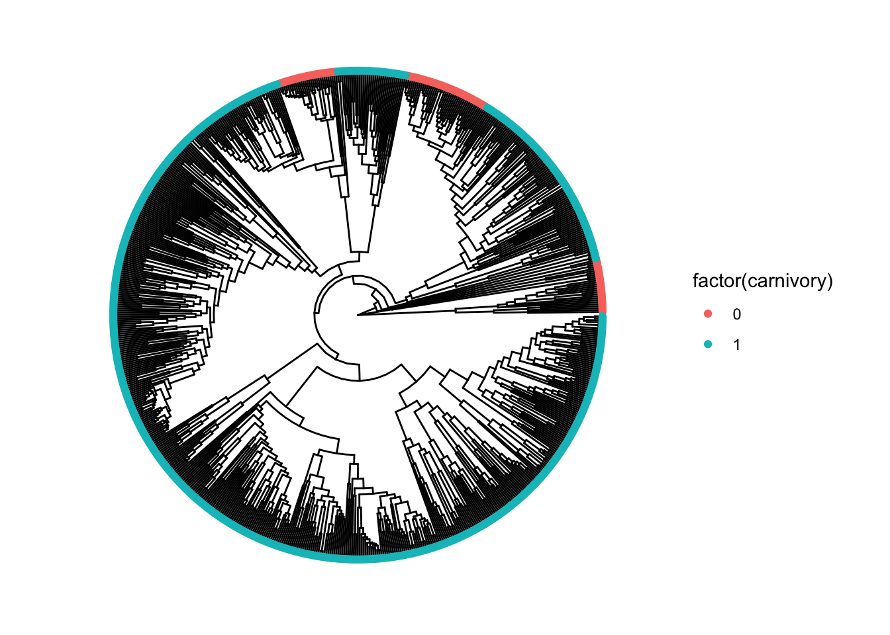
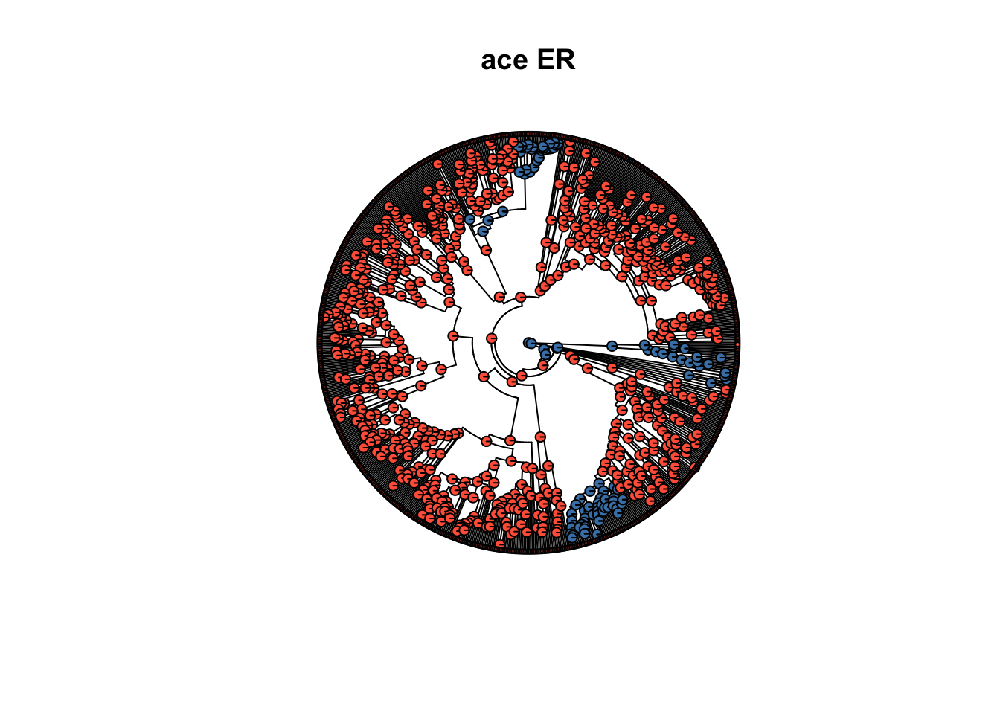
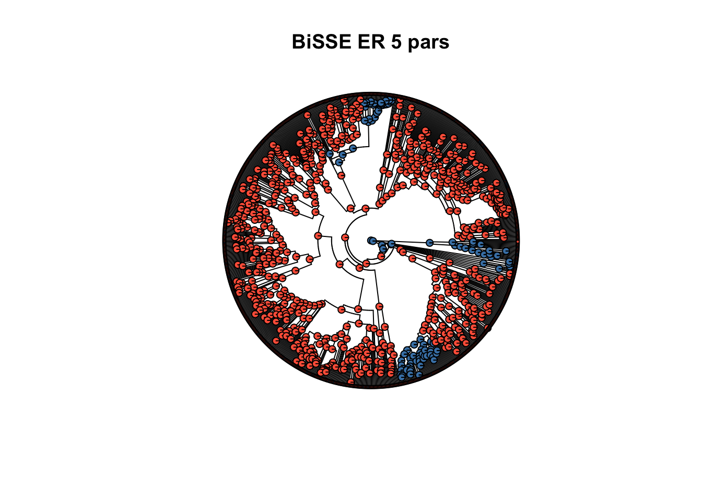

library(diversitree)
library(ggplot2)
library(ggtree)
library(ape)
library(phytools)Using Binary State Speciation and Extinction (BiSSE) models to understand trait change in the Hymenoptera
In Day 1, we modeled changes in discrete traits and geographic locations using Markov models defined on phylogenetic trees. We’re following this theme, but are now focusing on situations where traits/geography interact with the diversification process.
So far, we have been treating the trees as given without asking how they are created (by some biologist, presumably). If the traits we are interested in do not influence diversification, extinction/death, or the probability we observe a particular lineage, then the standard Markov models on trees seem sufficient. If, on the other hand, traits do influence the process creating the phylogenetic relationships we observe, we would like to estimate these effects. In addition to learning something new about the evolutionary process, this will allow us to control for these effects when carrying out ancestral state reconstructions.
The main package that is new to us today is “diversitree”. This includes functions to make and fit BiSSE models (and extensions that include multiple states, etc).
Let’s load in all of the packages we need:
We’re loading in ape and phytools so that we can compare results from our earlier methods with these newer ones.
An important point: diversitree was designed for applications in macroevolution, where phylogenetic trees are predominantly ultrametric. This means that all tips of the phylogenies occur at the same point in time. In macroevolution, where researchers are interested to understand evolutionary forces shaping organisms we observe today, most phylogenies will be ultrametric. In some instances, people use fossil data to have tips in phylogenies occurring in the very distant past so that trees are not ultrametric, but this is not something we will do today. (Fossil data can also be used to represent nodes of phylogenetic trees – but this only makes sense if species represented in fossils are ancestors of present-day organisms, which is not always the case.)
Ultrametric trees are not common in infectious disease epidemiology. However, BiSSE and its variants are conceptually related to models like the Multi-type birth-death model, which is often used to study infectious diseases and is available in BEAST2. An understanding of these macroevolutionary models will help us work with more complicated models in infectious disease analyses.
Trait change in the Hymenoptera
Let’s start by reading in an example phylogenetic tree for the Hymenoptera. This an order of insects that includes wasps, bees, and ants. These data are publicly available, and were analyzed in
Blaimer, B.B., Santos, B.F., Cruaud, A. et al. Key innovations and the diversification of Hymenoptera. Nat Commun 14, 1212 (2023). https://doi.org/10.1038/s41467-023-36868-4.
There are several different datasets with trait information associated with this phylogeny. One of these is carnivory (a binary trait for whether or not a particular species eats other insects).
Let’s read in the tree and the associated carnivory data. Due to some slight mismatch between species names in the tree and in the carnivory dataset, I have a handful of additional commands that manually rename species to be consistent (mostly by moving underscores and spaces):
tree <- read.tree("hymenoptera_data/HYMtopA_bamm_hisse.phy")
carndat <- read.csv('hymenoptera_data/Carnivory.csv', header=FALSE)
xcarn <- carndat[,2]
names(xcarn) <- carndat[,1]
# there are some name issues we have to sort out
znms <- setdiff(names(xcarn), tree$tip.label)
wnms <- setdiff(tree$tip.label, names(xcarn))
# It's fairly obvious what needs to be fixed - let's just do this manually:
badinds <- sapply(znms, function(x) which(names(xcarn)==x))
# reorder wnms to match znms
wwnms <- wnms[c(1,9,10,5,3,4,6,11,8,2,7)]
# visually check that we have these in the correct order:
rbind(znms, wwnms) [,1] [,2]
znms "Chalcimerus _borceai_JRAS01317_0301" "Chyphotes_mellipes_HPG7"
wwnms "Chalcimerus_borceai_JRAS01317_0301" "CHYP_Chyphotes_mellipes_HPG7"
[,3] [,4]
znms "Chyphotes_sp_EX553" "Hidryta_fusiventris_CO492"
wwnms "CHYP_Chyphotes_sp_EX553" "Hidryta_fusiventris_C0492"
[,5] [,6]
znms "Isolia_sp_OSUC698060" "Janzenella_innupta_OSUC264384"
wwnms "Isolia_sp_OSUC_698060" "Janzenella_innupta_OSUC_264384"
[,7] [,8]
znms "Phaeogenes_ss_sp_BS_UCE_Ich212" "Pristocera_sp1_EX552"
wwnms "Phaeogenes_sp_BS_UCE_Ich212" "Pristocerus_sp1_EX552"
[,9] [,10]
znms "Rhytidoponera_chalybaea_" "Ropronia_garmani_USMNENT0653896"
wwnms "Rhytidoponera_chalybaea_T000" "Ropronia_garmani_USNMENT0653896"
[,11]
znms "Trassedia_nsp_PSUC_FEM95969"
wwnms "Trassedia_n_sp_PSUC_FEM95969"# Looks good; replace the names in xcarn with these:
names(xcarn)[badinds] <- wwnms
carndat <- data.frame(label=names(xcarn), carnivory=unname(xcarn))
# Let's plot this:
p <- ggtree(tree, layout='circular')
p <- p %<+% carndat
p + geom_tippoint(aes(col=factor(carnivory)))
Carnivory is predominant, but there are a few distinct clades of peaceful non-carnivores in the mix. Which one of these is the ancestral trait? Did peaceful non-carnivory evolve three separate times, or has carnivory evolved multiple times?
Glancing at the tree, it looks like there might be some important differences between carnivores and non-carnivores in terms of branching rates in the tree. Notice that the group of non-carnivores at the top-left position of the tree look like a relatively new group of species. They share a common ancestor recently (at least relative to other clades throughout the tree, which tend to share a common ancestor in the more distant past, closer to the root of the tree). On the other hand, the group of non-carnivores close to the 3 o’clock position in the tree have pretty long terminal branch lengths, with their common ancestor a long time ago. Hmm…
It isn’t super clear what relationship, if any, exists between carnivory status and speciation rates – but we might be interested to know if there is one. (This is what the original authors were interested in.) On the other hand, even if a relationship between diversification and carnivory status isn’t our main focus, it still might be important for us to account for such a relationship between these things in order to obtain a reliable estimate of trait evolution in these animals (i.e. to color in ancestral nodes in a reasonable way). Depending on how personally invested we are in the relationship between trait and diversification, we might be inclined to think of the diversification process as being a nuisance parameter as far as the sequence of trait changes is concerned.
Warm-up: ace and/or fitMk
As a warm-up, let’s start by fitting our basic Markov models from yesterday. These do not account for any relationship between trait type and branching rate whatsoever. Let’s use both ace and fitMk to see if they give similar answers:
# fit using ace:
fit.er.ace <- ace(xcarn, tree, type='discrete', model='ER')Warning in ace(xcarn, tree, type = "discrete", model = "ER"): model fit
suspicious: gradients apparently non-finitefit.ard.ace <- ace(xcarn, tree, type='discrete', model='ARD')Warning in ace(xcarn, tree, type = "discrete", model = "ARD"): model fit
suspicious: gradients apparently non-finiteWe see that ace is returning errors about being unable to calculate gradients. This might be because of the long branches in our tree: over really long intervals of time, the probability of a state change in a Markov model will just be given by the stationary distribution, which depends on the relative magnitude of the different rates, but not their absolute values. If the data only contain information about the stationary distribution, there may not be sufficient information to tell us about the absolute magnitudes of the various rates. This, at least, is one potential explanation.
Let’s see how we do with fitMk:
# fit using fitMk:
fit.er.mk <- fitMk(tree, xcarn, model='ER')
fit.ard.mk <- fitMk(tree, xcarn, model='ARD')Apparently there are no errors. Hmm…
Let’s examine the rates in the different models, starting with the equal-rates (ER) model:
fit.er.ace$rates[1] 8.340472e-05fit.er.mk$rates[1] 8.340472e-05In the ER model, we see that the estimates from ace and fitMk are indistinguishable. Great! How about the all rates different (ARD) model?
fit.ard.ace$rates[1] 4.674517e-05 3.971149e-04fit.ard.mk$rates[1] 4.674554e-05 3.971135e-04The estimates from ace and fitMk look identical in this case, too. It looks like one of the rates is almost an order of magnitude larger than the other.
Review question: in the ARD models, which rate corresponds to a change from carnivory=1 to carnivory=0, and vice versa?
BiSSE models
Now, let’s try estimating these rates using a BiSSE model. We start by specifying a likelihood function:
bisse_likelihood_carn <- make.bisse(tree, xcarn)Let’s examine this object:
bisse_likelihood_carnBiSSE likelihood function:
* Parameter vector takes 6 elements:
- lambda0, lambda1, mu0, mu1, q01, q10
* Function takes arguments (with defaults)
- pars: Parameter vector
- condition.surv [TRUE]: Condition likelihood on survial?
- root [ROOT.OBS]: Type of root treatment
- root.p [NULL]: Vector of root state probabilities
- intermediates [FALSE]: Also return intermediate values?
* Phylogeny with 765 tips and 764 nodes
- Taxa: Chrysolampus_sp_ANIC00035_0189, ...
* References:
- Maddison et al. (2007) doi:10.1080/10635150701607033
- FitzJohn et al. (2009) doi:10.1093/sysbio/syp067
R definition:
function (pars, condition.surv = TRUE, root = ROOT.OBS, root.p = NULL,
intermediates = FALSE) The most important bit of information for us is the first section that explains the parameters this model accepts: two diversification/speciation rates (lambda0 and lambda1), two death/extinction rates (mu0 and mu1), and finally our rates of change in trait type over time (q01 and q10).
The observant among you will notice that this list includes six (6) parameters. Our ARD models previously had 2. Tripling the number of parameters is a pretty big change. Is there any way we can start with a simpler case and gradually make the model more complex? After all, I don’t have the faintest idea what values of lambda and mu make sense for these data. Also, what if I want to consider an ER model?
ER model in BiSSE
There is a very convenient way to impose restrictions on the parameters to make the model simpler in diversitree. As a baseline, let’s see what happens if we use an ER model, and assume that diversification/extinction are independent of the trait. In this case, I expect to get similar results to ace/fitMk in the ER case. To create this model, we do the following:
bisse_likelihood_er_indep <- constrain(bisse_likelihood_carn, formulae=c(lambda0~lambda1, mu0~mu1, q10~q01))
bisse_likelihood_er_indepBiSSE likelihood function:
* Parameter vector takes 3 elements:
- lambda1, mu1, q01
* Function constrained (original took 6 elements):
- lambda0 ~ lambda1
- mu0 ~ mu1
- q10 ~ q01
* Function takes arguments (with defaults)
- pars: Parameter vector
- ...: Additional arguments to underlying function
- pars.only [FALSE]: Return full parameter vector?
* Phylogeny with 765 tips and 764 nodes
- Taxa: Chrysolampus_sp_ANIC00035_0189, ...
* References:
- Maddison et al. (2007) doi:10.1080/10635150701607033
- FitzJohn et al. (2009) doi:10.1093/sysbio/syp067
R definition:
function (pars, ..., pars.only = FALSE) This seems a little more manageable. Let’s start by trying to estimate the parameters of this model, and use our estimates from the ace/fitMk ER model as an initial guess for q10=q01. I’m just going to try some different values to see how the likelihood is behaving:
bisse_likelihood_er_indep(c(1,0,fit.er.ace$rates))[1] -49375.97bisse_likelihood_er_indep(c(1,1,fit.er.ace$rates))[1] -6082.483bisse_likelihood_er_indep(c(1,2,fit.er.ace$rates))[1] Infbisse_likelihood_er_indep(c(2,1,fit.er.ace$rates))[1] -49906.06We will be estimating parameters by Maximum Likelihood, so the second guess seems like the most reasonable one on this list. Let’s start the optimization from there to see what we get:
fit.bisse.er.indep <- find.mle(bisse_likelihood_er_indep, c(1,1,fit.er.ace$rates))
fit.bisse.er.indep$par
lambda1 mu1 q01
1.545313e-02 4.612131e-09 8.213603e-05
$lnLik
[1] -3975.768
$counts
[1] 503
$convergence
[1] 0
$message
[1] "success! tolerance satisfied"
$hessian
NULL
$method
[1] "subplex"
$par.full
lambda0 lambda1 mu0 mu1 q01 q10
1.545313e-02 1.545313e-02 4.612131e-09 4.612131e-09 8.213603e-05 8.213603e-05
$func.class
[1] "constrained" "bisse" "dtlik" "function"
attr(,"func")
BiSSE likelihood function:
* Parameter vector takes 3 elements:
- lambda1, mu1, q01
* Function constrained (original took 6 elements):
- lambda0 ~ lambda1
- mu0 ~ mu1
- q10 ~ q01
* Function takes arguments (with defaults)
- pars: Parameter vector
- ...: Additional arguments to underlying function
- pars.only [FALSE]: Return full parameter vector?
* Phylogeny with 765 tips and 764 nodes
- Taxa: Chrysolampus_sp_ANIC00035_0189, ...
* References:
- Maddison et al. (2007) doi:10.1080/10635150701607033
- FitzJohn et al. (2009) doi:10.1093/sysbio/syp067
R definition:
function (pars, ..., pars.only = FALSE)
attr(,"class")
[1] "fit.mle.bisse" "fit.mle" It looks like we were able to fit this model without problems (the $message entry says “success! tolerance satisfied”, and the $convergence entry says “0”, which is also a good sign – problems usually produce different error codes in that entry).
Looking at the estimates themselves, we see that our ER model rate is \(8.21 \times 10^{-5}\), which is pretty close to the value of \(8.34 \times 10^{-5}\) we had from ace and fitMk. So, they’re close… but not identical.
We see that the overall diversification rate is \(\lambda = 1.54 \times 10^{-2}\), the extinction rate is \(\mu = 4.61 \times 10^{-9}\).
At this point, there are two obvious incremental complications we could introduce. We could try fitting an ARD model while still treating diversification independent of state, or we could stick with the ER model and allow for the possibility that diversification/extinction depend on carnivory status.
Let’s do this second one:
bisse_likelihood_er <- constrain(bisse_likelihood_carn, formulae=c(q10~q01))
bisse_likelihood_erBiSSE likelihood function:
* Parameter vector takes 5 elements:
- lambda0, lambda1, mu0, mu1, q01
* Function constrained (original took 6 elements):
- q10 ~ q01
* Function takes arguments (with defaults)
- pars: Parameter vector
- ...: Additional arguments to underlying function
- pars.only [FALSE]: Return full parameter vector?
* Phylogeny with 765 tips and 764 nodes
- Taxa: Chrysolampus_sp_ANIC00035_0189, ...
* References:
- Maddison et al. (2007) doi:10.1080/10635150701607033
- FitzJohn et al. (2009) doi:10.1093/sysbio/syp067
R definition:
function (pars, ..., pars.only = FALSE) This has five parameters to estimate, which is certainly more than three from the previous model. However, we have a good starting guess for the lambdas and the mus. Let’s use it:
# Place our previous estimate in a vector for convenience:
init <- fit.bisse.er.indep$par
fit.bisse.er <- find.mle(bisse_likelihood_er, c(init[1],init[1],init[2],init[2],init[3]) )
fit.bisse.er$par
lambda1 lambda1 mu1 mu1 q01
1.787200e-02 1.522435e-02 1.166234e-03 1.070834e-08 8.214490e-05
$lnLik
[1] -3975.037
$counts
[1] 405
$convergence
[1] 0
$message
[1] "success! tolerance satisfied"
$hessian
NULL
$method
[1] "subplex"
$par.full
lambda0 lambda1 mu0 mu1 q01 q10
1.787200e-02 1.522435e-02 1.166234e-03 1.070834e-08 8.214490e-05 8.214490e-05
$func.class
[1] "constrained" "bisse" "dtlik" "function"
attr(,"func")
BiSSE likelihood function:
* Parameter vector takes 5 elements:
- lambda0, lambda1, mu0, mu1, q01
* Function constrained (original took 6 elements):
- q10 ~ q01
* Function takes arguments (with defaults)
- pars: Parameter vector
- ...: Additional arguments to underlying function
- pars.only [FALSE]: Return full parameter vector?
* Phylogeny with 765 tips and 764 nodes
- Taxa: Chrysolampus_sp_ANIC00035_0189, ...
* References:
- Maddison et al. (2007) doi:10.1080/10635150701607033
- FitzJohn et al. (2009) doi:10.1093/sysbio/syp067
R definition:
function (pars, ..., pars.only = FALSE)
attr(,"class")
[1] "fit.mle.bisse" "fit.mle" From this output, we see that the optimization appeared to converge successfully. The two diversification rates (lambda0 and lambda1) are pretty close to each other, but the two extinction rates (mu0 and mu1) are very different from each other. The parameter mu0 is over five orders of magnitude larger than mu1. However, our estimate for \(q\) in the ER model seems unaffected, holding steady at \(q=8.21 \times 10^{-5}\).
GLR tests in BiSSE models
We can ask whether the difference in extinction rates is statistically significant. The fit of our two BiSSE models is very similar in terms of log-likelihood. Previously, the log-likelihood under the assumption of no relationship between diversifiction/extinction and trait change was \(\ln \mathcal{L} = -3975.768\). In this more complicated model, with five parameters, we have \(\ln \mathcal{L} = -3975.037\). The simpler model with three parameters is nested within the more complicated model with five parameters, so we can apply a Generalized Likelihood Ratio test to see if the model with the additional two parameters is supported by the data. (My guess is that it will not be – the improvement in log-likelihood is miniscule.)
1 - pchisq(2 * (-3975.037+3975.768), df=2, lower=F)[1] 0.5185727Remember that the test statistic is \(2 \times (-3975.037 - -3975.768)\), and under the null hypothesis that the data actually do arise from the simpler model, this quantity is \(\chi^2\)-distributed with two degrees of freedom (because the more complex model has two additional parameters). The quantity we just calculated is the p-value, that is, the probability of observing a value of the test statistic as extreme or more extreme than the one we actually observed (here, “extreme” means “large”). A p-value of 0.52 is not remotely close to statistical significance. On this basis, we would say that the more complex model is not supported by the data.
It is probably worth pointing out that just looking at differences in parameter estimates is not a reliable way to judge whether a more complicated model is supported by the data or not. When we allowed for the possibility that diversification and extinction rates could differ by carnivory status, we saw that one of the extinction rates looked like \(10^{-3}\) and the other was on the order of \(10^{-8}\). In the simpler model where the extinction rates were constrained to equal each other,we got an estimate on the order of \(10^{-9}\)–\(10^{-8}\). This is a huge difference – but the likelihood, or measure of fit to the data, did not change by a meaningful amount. In general, this type of instability in parameter estimates is an indication that the data contain limited information about the parameter (in this case, extinction rates) in the first place. Take this lesson to heart.
For futher reading (and in case the point is not driven home strongly enough) you may find this paper interesting:
Rabosky DL. Extinction rates should not be estimated from molecular phylogenies. Evolution. 2010 Jun;64(6):1816-24. doi: 10.1111/j.1558-5646.2009.00926.x. Epub 2009 Dec 17. PMID: 20030708.
For the Hymenoptera carnivory data, when fitting an ER model, it seems that (i) our estimated rate of state change does not change very much when we simultaneously estimate a diversification and extinction rate, and (ii) there is not any convincing evidence of a relationship between carnivory status and diversification/extinction rates.
Ancestral state reconstructions with BiSSE
What about ancestral state reconstructions? We might expect the inferences at internal nodes to be pretty similar to what we see from ace/fitMk, but we might as well verify this now. Let’s plot the most likely ancestral states at the internal nodes of our tree under ace, and compare this with our BiSSE model estimates. We will need the asr.marginal function for the BiSSE models:
asr.bisse.er.indep <- asr.marginal(bisse_likelihood_er_indep,coef(fit.bisse.er.indep))
asr.bisse.er <- asr.marginal(bisse_likelihood_er, coef(fit.bisse.er))
# the bisse asr's are annoyingly transposed compared to the ace lik.anc entry
asr.bisse.er.indep <- t(asr.bisse.er.indep)
asr.bisse.er <- t(asr.bisse.er)
asr.ace.er <- fit.er.ace$lik.ancThen we can plot these:
# plot the estimates from ace
plot(tree, show.tip.label = FALSE, cex=0.1, type='fan', main='ace ER')
nodelabels(pie = fit.er.ace$lik.anc, piecol = c("steelblue", "tomato"), cex = 0.3)
tiplabels(pie = cbind(1 - xcarn, xcarn), piecol = c("steelblue", "tomato"), cex = 0.14)
# plot the estimates from the bisse.indep model:
plot(tree, show.tip.label = FALSE, cex=0.1, type='fan',main='BiSSE ER 3 pars')
nodelabels(pie = asr.bisse.er.indep, piecol = c("steelblue", "tomato"), cex = 0.3)
tiplabels(pie = cbind(1 - xcarn, xcarn), piecol = c("steelblue", "tomato"), cex = 0.14)# plot the estimates from the bisse model that we tossed out under the GLR test:
plot(tree, show.tip.label = FALSE, cex=0.1, type='fan',main='BiSSE ER 5 pars')
nodelabels(pie = asr.bisse.er, piecol = c("steelblue", "tomato"), cex = 0.3)
tiplabels(pie = cbind(1 - xcarn, xcarn), piecol = c("steelblue", "tomato"), cex = 0.14)
These look indistinguishable from each other to me – which is what I expected, given the similary in the estimated rates of trait change. Accounting for diversification/extinction in the ER model does not seem to affect our ancestral state reconstructions.
What is the ancestral state reconstruction under the ER model, anyway? It seems that the progenitor of the extant species in Hymenoptera was not carnivorous. Most of the signal in the data for this is probably coming from the clade near the 3 o’clock position in the tree consisting of very old species (relative to the rest) that are all not carnivorous.
We have not done character mapping, so we are not able to identify precisely when state changes occurred along branches. However, the plausible scenario seems to be that the common ancestor for all of the species was not carnivorous, but carnivory evolved in one lineage a very long time ago. Since then, non-carnivory has independently evolved twice.
Do you think the answer will change if we consider asymmetric trait change, i.e. an ARD model?
Exercises
1.
We never actually asked whether the ARD model was statistically supported over the ER model when we were using ace. Carry out a Generalized Likelihood Ratio Test to determine whether differences in \(q_{01}\) and \(q_{10}\) are statistically significant when using ace (or fitMk).
2.
Fit an ARD model for the carnivory data under the assumption that the diversification and extinction rates are independent of the trait. Use the constrain function to help you. You may find it useful to start the optimization from ace’s ARD estimates (and feel free to use the BiSSE ER model’s diversification/extinction rate estimates as well).
3.
Next, fit your ARD model under the assumption that diversification and extinction rates can differ by trait. Does a Generalized Likelihood Ratio Test indicate that speciation/extinction rates differ by carnivory status?
4.
What happens if you compare this full BiSSE model with the simplest possible case (ER model with diversification/extinction uncorrelated with carnivory status) under a Generalized Likelihood Ratio Test?
5.
Load in a different Hymenoptera dataset of your choice. Do you find evidence of correlation between trait and diversification/extinction rates? How does this affect your estimates of ancestral states? Repeat the workflow of the tutorial and questions 1-4 to arrive at an answer.